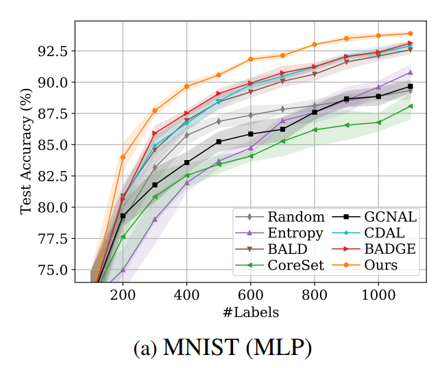

MNIST
The MNIST database (Modified National Institute of Standards and Technology database) is a
large collection of handwritten digits.
It has a training set of 60,000 examples,
and a test set of 10,000 examples.

Samples from the MNIST dataset
First, in order to check that everything works when importing Alpha-Mix from GitHub, I
implemented an MLP model on a MNIST data set as they did in the article, to check that
everything is indeed running properly and in a way that is similar to the results of
Alpha-Mix on the MLP model and MNIST data set from the article.
The parameters I used:
- Dataset = MNIST
- Model = MLP
- Initial label data = 100 samples
- Number of queries each round = 100 samples
- Number of rounds = 10 rounds
- Learning rate = 0.001
- Number of epochs = 1000
- Strategy = AlphaMixSampling compare to RandomSampling
I achieved results close to those presented in the article, although the article does not disclose the parameters used for running Alpha-Mix, making it challenging to reproduce. Please refer to the graph from the article, specifically focusing on 'Random' and 'Ours':
